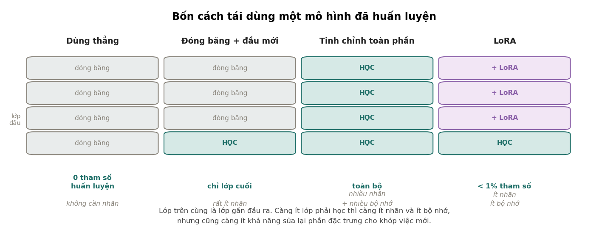

5. Vì sao tiền huấn luyện lại hiệu quả#
Đoán từ tiếp theo là một nhiệm vụ đại diện cực rộng: để làm đúng nó, mô hình buộc phải học sự thật về thế giới, ngữ pháp, số học và cấu trúc mã.
5.1. Một sự thật kinh tế đứng sau mọi thứ#
Trước khi vào cơ chế, hãy nhìn con số. Dữ liệu có nhãn thì đắt: thuê người đọc và gán nhãn 10 000 câu có thể tốn vài nghìn đô và vài tuần. Dữ liệu không nhãn thì gần như miễn phí: toàn bộ văn bản trên internet đã có sẵn.
Tỉ lệ giữa hai loại là khoảng một phần triệu. Nên bất kỳ cách nào biến dữ liệu không nhãn thành thứ có ích đều đáng giá hơn mọi cải tiến thuật toán trên dữ liệu có nhãn.
Tiền huấn luyện là cách làm đó. Nó dựng ra một nhiệm vụ mà nhãn tự sinh từ chính dữ liệu: che một từ đi rồi đoán nó, hoặc đoán từ tiếp theo. Không ai phải gán nhãn gì cả, mà mô hình vẫn có tín hiệu học.
5.2. Nhưng vì sao đoán từ tiếp theo lại dạy được nhiều đến thế?#
Đây mới là câu hỏi thú vị, và câu trả lời hời hợt kiểu "vì nó thấy nhiều dữ liệu" không đủ.
Lý do thật sự là: để đoán được từ tiếp theo cho đúng trong mọi ngữ cảnh, mô hình buộc phải học rất nhiều thứ khác. Hãy thử vài ví dụ cụ thể:
- "Thủ đô của nước Pháp là ___" — muốn đoán đúng phải biết sự thật về thế giới.
- "Cô ấy mở tủ lạnh và lấy ra một chai ___" — phải hiểu ngữ cảnh vật lý rằng trong tủ lạnh có gì.
- "Mặc dù trời mưa rất to, anh ấy vẫn ___" — phải nắm được quan hệ nhượng bộ trong ngữ pháp.
- "2 + 3 = ___" — phải làm được số học ở mức tối thiểu.
- "def fibonacci(n): if n <= 1: return n; return fibonacci(n-1) + ___" — phải hiểu cấu trúc mã.
Không có bài toán nào trong số đó được dạy riêng. Chúng đều là hệ quả bắt buộc của việc giảm mất mát đoán từ tiếp theo trên một kho đủ lớn và đủ đa dạng. Mô hình không học chúng vì ta muốn; nó học vì không học thì không đoán đúng được.
Cách nói gọn: đoán từ tiếp theo là một nhiệm vụ đại diện cực kỳ rộng. Nó không phải mục tiêu cuối, nó là cái cớ để mô hình phải xây dựng một biểu diễn hữu ích về thế giới.
5.3. Bốn cách tái dùng, và chúng khác nhau ở đâu#

| Cách | Số tham số phải học | Cần bao nhiêu nhãn | Khi nào dùng |
|---|---|---|---|
| Dùng thẳng, không chỉnh | 0 | không cần | nhiệm vụ đã nằm trong khả năng sẵn có của mô hình |
| Đóng băng + đầu tuyến tính | chỉ lớp cuối | rất ít | ít nhãn; hoặc cần chạy nhiều nhiệm vụ trên cùng một bộ đặc trưng |
| Tinh chỉnh toàn phần | toàn bộ | nhiều | có nhiều nhãn và đủ bộ nhớ |
| LoRA | dưới 1% | ít tới vừa | có ít nhãn nhưng cần sửa sâu hơn một lớp tuyến tính |
Bảng này chỉ là khung. Câu hỏi thật là: ở bao nhiêu nhãn thì nên chuyển từ cách này sang cách kia? Chương 6 trả lời bằng số đo.
5.4. Tiền huấn luyện hỏng khi nào#
Không có gì miễn phí, nên cần biết giới hạn:
- Khi miền đích quá xa miền tiền huấn luyện. Một mô hình học trên văn bản web không giúp được mấy cho tín hiệu cảm biến công nghiệp. Đặc trưng nó học không có gì dùng lại được.
- Khi nhiệm vụ đích cần thứ mà nhiệm vụ đại diện không đụng tới. Mô hình ngôn ngữ giỏi ngữ pháp nhưng không giỏi số học nhiều chữ số, vì đoán từ tiếp theo hiếm khi đòi hỏi tính toán chính xác.
- Khi mô hình tiền huấn luyện mang sẵn thiên lệch mà nhiệm vụ đích không chấp nhận được. Nó học từ dữ liệu người viết, nên nó kế thừa cả thiên kiến trong dữ liệu ấy. Tinh chỉnh làm giảm nhưng không xoá được.
Điểm thứ ba là vấn đề thật trong sản xuất, không phải vấn đề lý thuyết — Chương 6 của MLOps bàn về đánh giá theo lát cắt, và đó là công cụ để phát hiện nó.
Tự kiểm tra
2 câu. Chọn đáp án để xem ngay lời giải thích.
1Vì sao đoán từ tiếp theo lại dạy được nhiều thứ đến vậy?
Vì sao: Đây là nhiệm vụ đại diện: không phải mục tiêu cuối mà là cái cớ để mô hình phải xây dựng biểu diễn hữu ích về thế giới.2Tiền huấn luyện hỏng khi nào?
Vì sao: Mô hình học trên văn bản web không giúp được mấy cho tín hiệu cảm biến công nghiệp. Và nó giỏi ngữ pháp nhưng không giỏi số học nhiều chữ số, vì đoán từ tiếp theo hiếm khi đòi tính toán chính xác.
Đã trả lời 0/2